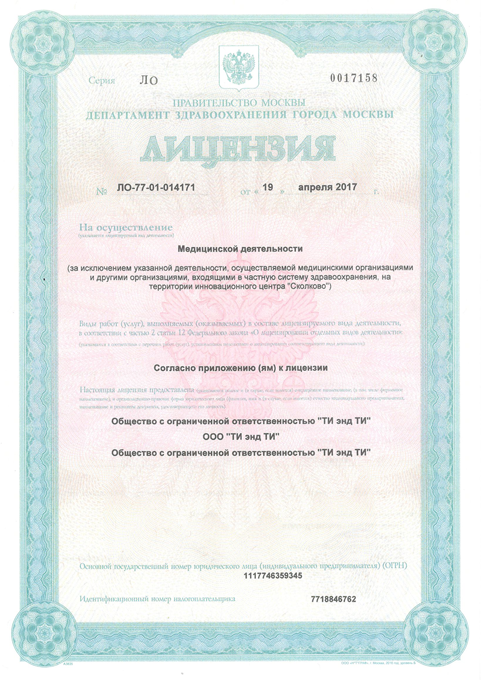
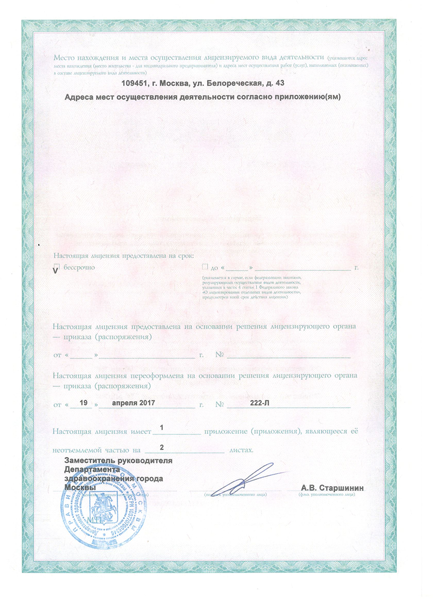

Медицинская справка 086 у Москва | Справка для учебы | Справка для поступления на работу
 {kind=link}
{kind=link}
Одно из самых беззаботных времен за всю жизнь человека - это студенческие годы. Ведь это время, когда еще не обязательно работать в полную меру, но уже необходимо иметь ответственность за все поступки, которые выполняются. И, если следовать неукоснительным правилам, то все будет происходить легко и непринуждённо. Одним из правил является подача определенного списка документов перед непосредственным вступлением в ряды студентов. Так, одним из таких важных документов является медицинская справка по форме 086 у. Форма 086у так же именуется как справка для учебы, студенческая справка, и представляет из себя официальный медицинский документ, заключение ряда врачей узкой специализации о состоянии здоровья студента. Стоит заметить, что иногда такую справку требует новый работодатель, поэтому к такой просьбе нужно относиться нормально и знать, что это в порядке вещей.
Что же представляет из себя медсправка для студента по форме 086 у?
Справка формы 086у является своеобразной гарантией от медиков того, что студент не страдает хроническими заболеваниями и не имеет таких патологий, которые могут проявиться внезапно при занятии определенной деятельностью, связанной с его будущей профессией. Так, к примеру, справка в ВУЗ чаще всего требуется представителям "опасных" профессий: пожарникам, работникам МЧС, полицейским и так далее. Так же, справку в обязательном порядке потребуется абитуриентам спортивных факультетов.
Для того, чтобы получить справку по форме 086у, не достаточно прийти на осмотр к терапевту. Здесь нужно сильно постараться, ведь список врачей для получения документа оставляет желать лучшего:
- Терапевт;
- Врач-ЛОР;
- Хирург;
- Окулист;
- Невропатолог.
Встречаются и индивидуальные ситуации, когда список врачей может быть расширен в связи с особенностями той или иной профессии или специальности, это зависит уже от специфики рода деятельности. Например, могут потребовать пройти таких дополнительных специалистов, как гинеколог, уролог, психотерапевт, нарколог или дерматолог.
Как же выглядит справка 086у?
Справка 086 у оформляется по специальному образцу, который официально принят государственным законодательством, и имеет специальный порядок заполнения. Так, к примеру, в первую очередь терапевт, который и выписывает документ, вносит в справку личные данные пациента: фио, дату рождения, возраст и прописку. Далее заполняются графы, в которых необходимо указать название медучреждения, где выписывается справка, а так же адрес организации, куда впоследствии документ предоставится. Помимо записей каждого из специалистов, в справку в обязательном порядке вносят сведения обо всех перенесенных хронических заболеваниях, а так же данные о прививках, вакцинациях и манту. Иногда - общие анализы крови и мочи. По итогам всех записей терапевт обязан вынести вердикт относительно пригодности студента. А уже после этого справка заверяется подписью терапевта, а так же печатью или штампом медзаведения.